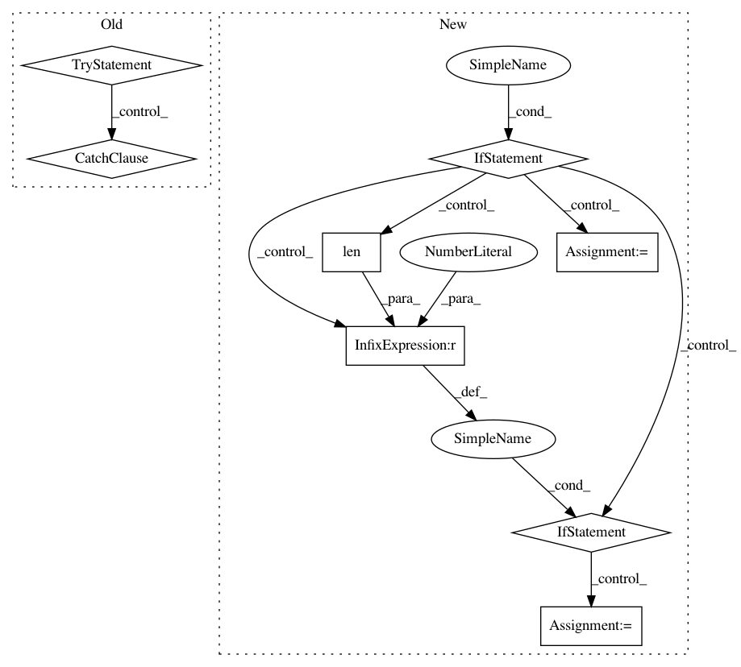

ca14cf72e3e4bd3a6136cafad8701ac41f48f09b,yellowbrick/cluster/elbow.py,KElbowVisualizer,__init__,#KElbowVisualizer#Any#Any#Any#Any#Any#,206
Before Change
k = (2, k+1)
// Expand k in to the values we will use, capturing exceptions
try:
k = tuple(k)
self.k_values_ = list(range(*k))
except:
raise YellowbrickValueError((
"Specify a range or maximal K value, the value "{}" "
"is not a valid argument for K.".format(k)
))
// Holds the values of the silhoutte scores
self.k_scores_ = None
def fit(self, X, y=None, **kwargs):
After Change
self.timings = timings
// Convert K into a tuple argument if an integer
if isinstance(k, int):
self.k_values_ = list(range(2, k+1))
elif isinstance(k, tuple) and len(k) == 2 and \
all(isinstance(x, (int, np.integer)) for x in k):
self.k_values_ = list(range(*k))
elif isinstance(k, collections.Iterable) and \
all(isinstance(x, (int, np.integer)) for x in k):
self.k_values_ = list(k)
else:
raise YellowbrickValueError((
"Specify an iterable of integers, a range, or maximal K value,"
" the value "{}" is not a valid argument for K.".format(k)
))
// Holds the values of the silhoutte scores
self.k_scores_ = None
def fit(self, X, y=None, **kwargs):
In pattern: SUPERPATTERN
Frequency: 3
Non-data size: 8
Instances
Project Name: DistrictDataLabs/yellowbrick
Commit Name: ca14cf72e3e4bd3a6136cafad8701ac41f48f09b
Time: 2018-08-25
Author: davidwaterman@gmail.com
File Name: yellowbrick/cluster/elbow.py
Class Name: KElbowVisualizer
Method Name: __init__
Project Name: prody/ProDy
Commit Name: 7ca79b945accfbf1c5e435eac1e9e25c0d808272
Time: 2018-02-19
Author: jamesmkrieger@gmail.com
File Name: prody/proteins/blastpdb.py
Class Name:
Method Name: blastPDB
Project Name: etal/cnvkit
Commit Name: db70037e427c51b00a79c7962e33b9efbe2241c1
Time: 2016-01-15
Author: eric.talevich@gmail.com
File Name: cnvlib/coverage.py
Class Name:
Method Name: bedcov